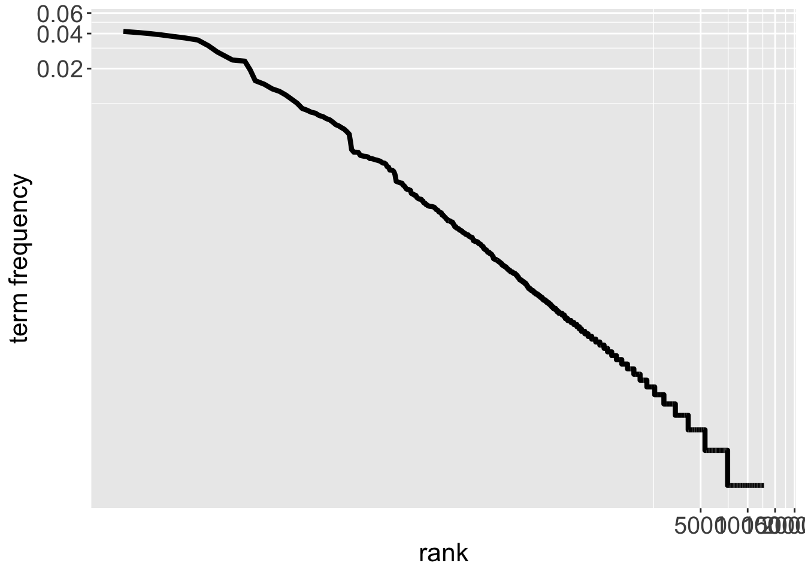

text_Hesse <- readLines( "hesse_quote.txt" )
text_Hesse[1] "Some of us think holding on makes us strong,"
[2] "but sometimes it is letting go." We start Chapter 3 on Text Data Analysis:
What is text data and why is it important?
Analysis of word frequency (Section 3.1)
Sentiment Analysis (Section 3.2)
Comparing term frequencies (Section 3.3.1)
19 submissions (out of 165)
Majority of students seems happy with how the course is run
Concerns that were raised by more than one student:
Vagueness and lack of context in the coursework
Lack of complex examples and a fully written report
Amount of questions on the problem sheets

Text data is collected widely, for instance, for
Optimizing search engines
Crime prevention
Customer service
In all these applications, we are interested in
The words used within the text
The intention of the text
One way to store text data is as .txt file.
The file “Hesse quote.txt” contains a short quote that we load with readLines()
text_Hesse <- readLines( "hesse_quote.txt" )
text_Hesse[1] "Some of us think holding on makes us strong,"
[2] "but sometimes it is letting go." Is this data in a useful format?
Let’s define a data frame
quote_Hesse <- data.frame( line=1:2, text=text_Hesse )
quote_Hesse line text
1 1 Some of us think holding on makes us strong,
2 2 but sometimes it is letting go.Does this help?
We focus on analysing the individual words in a text.
As such,
each word is an individual observation
we do not care about punctuation
We use the unnest_tokens() function in the tidytext package to extract the individual words
library(tidytext)
Hesse_tidy <- quote_Hesse %>% unnest_tokens( word, text )head( Hesse_tidy ) line word
1 1 some
2 1 of
3 1 us
4 1 think
5 1 holding
6 1 onThe tidy text format propagates:
Each variable is a column: our variable of interest is word
Each observation is a row: we have one word per row
Jane Eyre is a novel that was published in 1847.
We download the full text from Project Gutenberg.
-> R Markdown file
The book has about 21,000 lines of text, and we separate them into individual words:
JaneEyre <- JaneEyre_raw %>% unnest_tokens( word, text )There is some data cleaning to be done!
-> R Markdown file
Exploring the frequency of the different words in a text is a common approach in text data analysis.
We use functions in the dplyr R package for this
library(dplyr)
JaneEyre_Count <- JaneEyre %>%
count( word, sort=TRUE ) %>%
mutate( 'term frequency'=n/sum(n), rank=row_number() )
slice_head( JaneEyre_Count, n=10 )-> R Markdown file
Let’s create a plot of term frequency versus rank on log scale

What do we notice?
Relationship between rank and term frequency on logarithmic scale is close to linear
The non-linear shape in the top-left is driven by only six words.
Zipf’s Law states that empirically a word’s frequency is inversely proportional to its rank.
The words “the”, “I” and “and” appear most often in Jane Eyre.
Is this information useful?
It is quite common in text data analysis to specify stop words which are ignored in the analysis.
The tidytext package comes with its own list of stop words:
-> R Markdown file
There are two options for visualizing the most frequent words:
Bar plots - good to display the actual counts
Word clouds - good for many words
Let’s produce these plots for Jane Eyre
-> R Markdown file
The emotional intent of the text:
Is a text more positive or negative?
Is a review positive or negative?
How does the story evolve throughout the book?
We start by assigning a sentiment to each individual word using a sentiment lexicon.
The following two lexicons are provided by tidytext:
AFINN: Sentiment score between -5 and +5.
Bing: Words are categorized as “positive” or “negative”.
The sentiment of a text is then the sum (or mean) of the sentiment of the words.
Is this a weak, moderate or strong assumption?
For which pieces of text may our approach perform poorly?
We already analysed word frequency for the book.
Let’s see what we can say about the sentiment.
-> R Markdown file
Sentiment analysis assesses whether a text has a positive or negative emotional intent.
We measure sentiment via the individual words. We make an assumption here!
Important: Stop words are not removed, because they may be important.
Remark: The relative change in sentiment is often more accurate than the actual values.
In many applications we are interested in comparing two (or more) pieces of text.
Can you think of examples?
Using the methods we introduced, we may explore two aspects:
Word frequency
Sentiment
Interest in exploring two pieces of text in terms of term frequency of the individual words.
Why should we not compare the actual counts?
Let’s compare the novels Jane Eyre and Wuthering Heights
-> R Markdown file